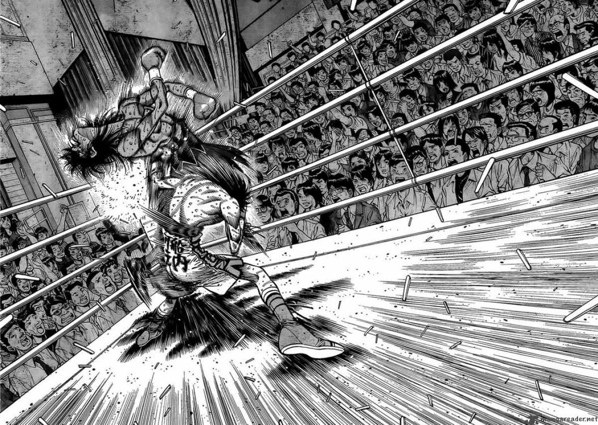

 Нурзалиев Олжас Аскарович 3202
Сегодня университет – это динамично развивающееся учебное заведение высшего профессионального образования,
ведущий вуз Югры по целому ряду образовательных направлений университетской подготовки высококвалифицированных кадров
для науки, образования, экономики и культуры.
В НВГУ работают и обучаются талантливые, одаренные люди, ярко проявляющие себя и в науке, и в спорте, и в художественном
творчестве, победители и призеры окружных, российских, международных конкурсов, фестивалей и чемпионатов.
В университете реализуется 141 образовательная программа. В структуру университета входят 6 факультетов – гуманитарный,
педагогики и психологии, информационных технологий и математики, экологии и инжиниринга, искусств и дизайна,
физической культуры и спорта; 17 кафедр и 4 базовые кафедры предприятий, 8 научно-исследовательских лабораторий
и 3 конструкторских бюро. Кроме того, университет сотрудничает со школами, открывая профильные классы совместно
с ведущими работодателями. Сегодня открыто 15 профильных классов. Учебный процесс и научную работу обеспечивают
177 научно-педагогических работников, в том числе 30 докторов наук, профессоров и 147 кандидатов наук, доцентов.
Я стремлюсь стать профессиональным разработчиком на C++. Мой стек технологий включает:
Контактный номер: 89641748680